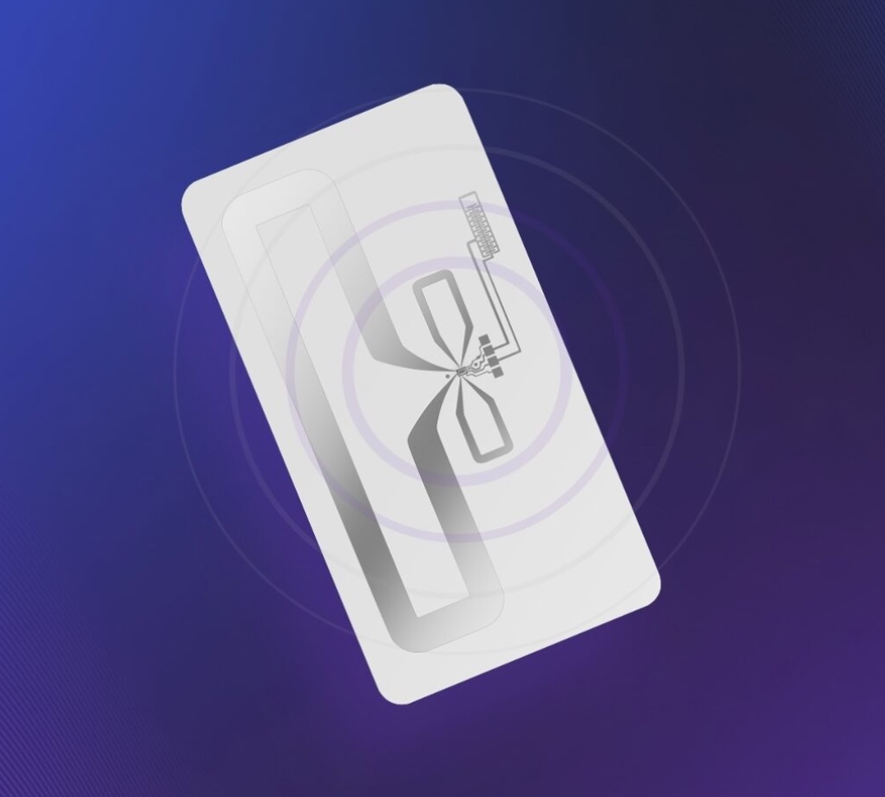

Case Study
Ambient IoT Cold Chain Intelligence
Turning ambient Bluetooth signals into trusted decisions — with validation rigor and associate trust built in.

Public partnership coverage image (Wiliot × Walmart).
Context
Bluetooth-enabled tagging introduced real-time temperature and location signals for cold-chain inventory movement. The product challenge wasn’t tracking — it was translating noisy real-world signals into decisions teams would trust and act on.
The Challenge
- Real-world signal quality varies; false positives can drive costly or incorrect actions.
- Decisions affect frontline workflows; adoption depends on trust and clarity.
- ML-informed recommendations require validation, guardrails, and launch criteria to manage risk.
- Associates can perceive sensing systems as “monitoring,” so emotional trust must be designed explicitly.
My Role
As the product lead, I drove 0→1 strategy for a signal-driven evaluation system that converted ambient IoT data into validated operational decisions. I partnered with engineering, data science, and operations to align on guardrails, rollout approach, and trust-first design.
System Design
- Validation discipline: structured evaluation using historical + live signals to assess reliability before scaling.
- Guardrails: confidence thresholds and “do no harm” logic for safety-sensitive scenarios.
- Human-in-the-loop: explainable recommendations and override capability where judgment matters.
- Trust-first adoption: messaging and UX designed to avoid associate anxiety around surveillance and reinforce “assist, not monitor.”
Impact
- Improved decision reliability and reduced disruption through validation and guardrails.
- Enabled scalable adoption by designing for associate trust and psychological safety.
- Established a reusable governance pattern for ML-informed operational decision systems.

Hardware signal layer (tag-level) supporting the decision infrastructure.